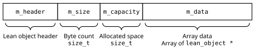

ProofScript — 20.16. Arrays
Reference home · Grammar: ps-0.9-r2 · Semantic pin: Lean 4.34.0 stable.
Nat, Int, machine integers, floats, characters, strings, bytes, options, products, sums, lists, arrays, maps, ranges, subtypes and lazy computations retain their distinct native contracts. A target representation is not their meaning. Nat subtraction saturates at zero; the selected Int quotient differs from JavaScript BigInt truncation for some negative inputs. String offsets and Unicode conversions require explicit mappings.
Compiler and coverage boundary. The full API entries below retain exact names and signature metadata. Distinguish a signature display from executable source. Unknown reachable primitives reject the requested executable profile.
Inherited detail and attribution. The section below is adapted from the Apache-2.0 Lean reference mirrored at Basic-Types/Arrays/index.html. Source Git blob: c517c2320321b62a1280c4e9d6c34d3a97fe4995. Its prose, API signatures and native names are retained where they describe the inherited semantics. Selected definition-keyword presentation aliases are recorded separately, not certified by a PSC parser. Native toolchains, intentional errors and historical releases keep their actual identities. The mirror contains rc2 material; the stable pin and stable-delta audit override conflicting claims.
20.16. Arrays
The Array type represents sequences of elements, addressable by their position in the sequence. Arrays are specially supported by Lean:
- They have a logical model that specifies their behavior in terms of lists of elements, which specifies the meaning of each operation on arrays.
- They have an optimized run-time representation in compiled code as dynamic arrays, and the Lean runtime specially optimizes array operations.
- There is array literal syntax for writing arrays.
Arrays can be vastly more efficient than lists or other sequences in compiled code. In part, this is because they offer good locality: because all the elements of the sequence are next to each other in memory, the processor's caches can be used efficiently. Even more importantly, if there is only a single reference to an array, operations that might otherwise copy or allocate a data structure can be implemented via mutation. Lean code that uses an array in such a way that there's only ever one unique reference (that is, uses it linearly) avoids the performance overhead of persistent data structures while still being as convenient to write, read, and prove things about as ordinary pure functional programs.
20.16.1. Logical Model
structure
Array.{u} (α : Type u) : Type u
Array α is the type of dynamic arrays with elements from α. This type has special support in the runtime.
Arrays perform best when unshared. As long as there is never more than one reference to an array, all updates will be performed destructively. This results in performance comparable to mutable arrays in imperative programming languages.
An array has a size and a capacity. The size is the number of elements present in the array, while the capacity is the amount of memory currently allocated for elements. The size is accessible via Array.size, but the capacity is not observable from Lean code. Array.emptyWithCapacity n creates an array which is equal to #[], but internally allocates an array of capacity n. When the size exceeds the capacity, allocation is required to grow the array.
From the point of view of proofs, Array α is just a wrapper around List α.
Constructor
Array.mk.{u}
Converts a List α into an Array α.
The function List.toArray is preferred.
At runtime, this constructor is overridden by List.toArrayImpl and is O(n) in the length of the list.
Fields
toList : List α
Converts an Array α into a List α that contains the same elements in the same order.
At runtime, this is implemented by Array.toListImpl and is O(n) in the length of the array.
The logical model of arrays is a structure that contains a single field, which is a list of elements. This is convenient when specifying and proving properties of array-processing functions at a low level.
20.16.2. Run-Time Representation
Lean's arrays are dynamic arrays, which are blocks of continuous memory with a defined capacity, not all of which is typically in use. As long as the number of elements in the array is less than the capacity, new items can be added to the end without reallocating or moving the data. Adding items to an array that has no extra space results in a reallocation that doubles the capacity. The amortized overhead scales linearly with the size of the array. The values in the array are represented as described in the section on the foreign function interface.
After the object header, an array contains:
size
The number of objects currently stored in the array
capacity
The number of objects that fit in the memory allocated for the array
data
The values in the array
Many array functions in the Lean runtime check whether they have exclusive access to their argument by consulting the reference count in the object header. If they do, and the array's capacity is sufficient, then the existing array can be mutated rather than allocating fresh memory. Otherwise, a new array must be allocated.
20.16.2.1. Performance Notes
Despite the fact that they appear to be an ordinary constructor and projection, Array.mk and Array.toList take time linear in the size of the array in compiled code. This is because converting between linked lists and packed arrays must necessarily visit each element.
Mutable arrays can be used to write very efficient code. However, they are a poor persistent data structure. Updating a shared array rules out mutation, and requires time linear in the size of the array. When using arrays in performance-critical code, it's important to ensure that they are used linearly.
20.16.3. Syntax
Array literals allow arrays to be written directly in code. They may be used in expression or pattern contexts.
syntax
Array Literals
Array literals begin with #[ and contain a comma-separated sequence of terms, terminating with ].
term ::= ...
| #[term,*]
Array literals may be used as expressions or as patterns.
const oneTwoThree : Array Nat := #[1, 2, 3]
#eval
match oneTwoThree with
| #[x, y, z] => some ((x + z) / y)
| _ => none
Additionally, sub-arrays may be extracted using the following syntax:
syntax
Sub-Arrays
A start index followed by a colon constructs a sub-array that contains the values from the start index onwards (inclusive):
term ::= ...
| term[term :]
Providing start and end indices constructs a sub-array that contains the values from the start index (inclusive) to the end index (exclusive):
term ::= ...
| term[term : term]
The array ten contains the first ten natural numbers.
const ten : Array Nat :=
.range 10
A sub-array that represents the second half of ten can be constructed using the sub-array syntax:
#eval ten[5:]
#[5, 6, 7, 8, 9].toSubarray
Similarly, sub-array that contains two through five can be constructed by providing a stopping point:
#eval ten[2:6]
#[2, 3, 4, 5].toSubarray
Because sub-arrays merely store the start and end indices of interest in the underlying array, the array itself can be recovered:
#eval ten[2:6].array == ten
true
20.16.4. API Reference
20.16.4.1. Constructing Arrays
def
Array.empty.{u} {α : Type u} : Array α
Constructs a new empty array with initial capacity 0.
Use Array.emptyWithCapacity to create an array with a greater initial capacity.
def
Array.emptyWithCapacity.{u} {α : Type u} (c : Nat) : Array α
Constructs a new empty array with initial capacity c.
def
Array.singleton.{u} {α : Type u} (v : α) : Array α
Constructs a single-element array that contains v.
Examples:
Array.singleton 5 = #[5]Array.singleton "one" = #["one"]
def
Array.range (n : Nat) : Array Nat
Constructs an array that contains all the numbers from 0 to n, exclusive.
Examples:
Array.range 5 := #[0, 1, 2, 3, 4]Array.range 0 := #[]Array.range 1 := #[0]
def
Array.range' (start size : Nat) (step : Nat := 1) : Array Nat
Constructs an array of numbers of size size, starting at start and increasing by step at each element.
In other words, Array.range' start size step is #[start, start+step, ..., start+(len-1)*step].
Examples:
Array.range' 0 3 (step := 1) = #[0, 1, 2]Array.range' 0 3 (step := 2) = #[0, 2, 4]Array.range' 0 4 (step := 2) = #[0, 2, 4, 6]Array.range' 3 4 (step := 2) = #[3, 5, 7, 9]
def
Array.finRange (n : Nat) : Array (Fin n)
Returns an array of all elements of Fin n in order, starting at 0.
Examples:
Array.finRange 0 = (#[] : Array (Fin 0))Array.finRange 2 = (#[0, 1] : Array (Fin 2))
def
Array.ofFn.{u} {α : Type u} {n : Nat} (f : Fin n → α) : Array α
Creates an array by applying f to each potential index in order, starting at 0.
Examples:
Array.ofFn (n := 3) toString = #["0", "1", "2"]Array.ofFn (fun i => #["red", "green", "blue"].get i.val i.isLt) = #["red", "green", "blue"]
def
Array.replicate.{u} {α : Type u} (n : Nat) (v : α) : Array α
Creates an array that contains n repetitions of v.
The corresponding List function is List.replicate.
Examples:
Array.replicate 2 true = #[true, true]Array.replicate 3 () = #[(), (), ()]Array.replicate 0 "anything" = #[]
def
Array.append.{u} {α : Type u} (as bs : Array α) : Array α
Appends two arrays. Normally used via the ++ operator.
Appending arrays takes time proportional to the length of the second array.
Examples:
#[1, 2, 3] ++ #[4, 5] = #[1, 2, 3, 4, 5].#[] ++ #[4, 5] = #[4, 5].#[1, 2, 3] ++ #[] = #[1, 2, 3].
def
Array.appendList.{u} {α : Type u} (as : Array α) (bs : List α) : Array α
Appends an array and a list.
Takes time proportional to the length of the list..
Examples:
#[1, 2, 3].appendList [4, 5] = #[1, 2, 3, 4, 5].#[].appendList [4, 5] = #[4, 5].#[1, 2, 3].appendList [] = #[1, 2, 3].
def
Array.leftpad.{u} {α : Type u} (n : Nat) (a : α) (xs : Array α) :
Array α
Pads xs : Array α on the left with repeated occurrences of a : α until it is of size n. If xs already has at least n elements, it is returned unmodified.
Examples:
#[1, 2, 3].leftpad 5 0 = #[0, 0, 1, 2, 3]#["red", "green", "blue"].leftpad 4 "blank" = #["blank", "red", "green", "blue"]#["red", "green", "blue"].leftpad 3 "blank" = #["red", "green", "blue"]#["red", "green", "blue"].leftpad 1 "blank" = #["red", "green", "blue"]
def
Array.rightpad.{u} {α : Type u} (n : Nat) (a : α) (xs : Array α) :
Array α
Pads xs : Array α on the right with repeated occurrences of a : α until it is of length n. If l already has at least n elements, it is returned unmodified.
Examples:
#[1, 2, 3].rightpad 5 0 = #[1, 2, 3, 0, 0]#["red", "green", "blue"].rightpad 4 "blank" = #["red", "green", "blue", "blank"]#["red", "green", "blue"].rightpad 3 "blank" = #["red", "green", "blue"]#["red", "green", "blue"].rightpad 1 "blank" = #["red", "green", "blue"]
20.16.4.2. Size
def
Array.size.{u} {α : Type u} (a : Array α) : Nat
Gets the number of elements stored in an array.
This is a cached value, so it is O(1) to access. The space allocated for an array, referred to as its capacity, is at least as large as its size, but may be larger. The capacity of an array is an internal detail that's not observable by Lean code.
def
Array.usize.{u} {α : Type u} (xs : Array α) : USize
Returns the size of the array as a platform-native unsigned integer.
This is a low-level version of Array.size that directly queries the runtime system's representation of arrays. While this is not provable, Array.usize always returns the exact size of the array since the implementation only supports arrays of size less than USize.size.
def
Array.isEmpty.{u} {α : Type u} (xs : Array α) : Bool
Checks whether an array is empty.
An array is empty if its size is 0.
Examples:
(#[] : Array String).isEmpty = true#[1, 2].isEmpty = false#[()].isEmpty = false
20.16.4.3. Lookups
def
Array.extract.{u_1} {α : Type u_1} (as : Array α) (start : Nat := 0)
(stop : Nat := as.size) : Array α
Returns the slice of as from indices start to stop (exclusive). The resulting array has size (min stop as.size) - start.
If start is greater or equal to stop, the result is empty. If stop is greater than the size of as, the size is used instead.
Examples:
#[0, 1, 2, 3, 4].extract 1 3 = #[1, 2]#[0, 1, 2, 3, 4].extract 1 30 = #[1, 2, 3, 4]#[0, 1, 2, 3, 4].extract 0 0 = #[]#[0, 1, 2, 3, 4].extract 2 1 = #[]#[0, 1, 2, 3, 4].extract 2 2 = #[]#[0, 1, 2, 3, 4].extract 2 3 = #[2]#[0, 1, 2, 3, 4].extract 2 4 = #[2, 3]
def
Array.getD.{u_1} {α : Type u_1} (a : Array α) (i : Nat) (v₀ : α) : α
Returns the element at the provided index, counting from 0. Returns the fallback value v₀ if the index is out of bounds.
To return an Option depending on whether the index is in bounds, use a[i]?. To panic if the index is out of bounds, use a[i]!.
Examples:
#["spring", "summer", "fall", "winter"].getD 2 "never" = "fall"#["spring", "summer", "fall", "winter"].getD 0 "never" = "spring"#["spring", "summer", "fall", "winter"].getD 4 "never" = "never"
def
Array.uget.{u} {α : Type u} (xs : Array α) (i : USize)
(h : i.toNat < xs.size) : α
Low-level indexing operator which is as fast as a C array read.
This avoids overhead due to unboxing a Nat used as an index.
def
Array.back.{u} {α : Type u} (xs : Array α)
(h : 0 < xs.size := by get_elem_tactic) : α
Returns the last element of an array, given a proof that the array is not empty.
See Array.back! for the version that panics if the array is empty, or Array.back? for the version that returns an option.
def
Array.back?.{u} {α : Type u} (xs : Array α) : Option α
Returns the last element of an array, or none if the array is empty.
See Array.back! for the version that panics if the array is empty, or Array.back for the version that requires a proof the array is non-empty.
def
Array.back!.{u} {α : Type u} [Inhabited α] (xs : Array α) : α
Returns the last element of an array, or panics if the array is empty.
Safer alternatives include Array.back, which requires a proof the array is non-empty, and Array.back?, which returns an Option.
def
Array.getMax?.{u} {α : Type u} (as : Array α) (lt : α → α → Bool) :
Option α
Returns the largest element of the array, as determined by the comparison lt, or none if the array is empty.
Examples:
(#[] : Array Nat).getMax? (· < ·) = none#["red", "green", "blue"].getMax? (·.length < ·.length) = some "green"#["red", "green", "blue"].getMax? (· < ·) = some "red"
20.16.4.4. Queries
def
Array.count.{u} {α : Type u} [BEq α] (a : α) (as : Array α) : Nat
Counts the number of times an element occurs in an array.
Examples:
#[1, 1, 2, 3, 5].count 1 = 2#[1, 1, 2, 3, 5].count 5 = 1#[1, 1, 2, 3, 5].count 4 = 0
def
Array.countP.{u} {α : Type u} (p : α → Bool) (as : Array α) : Nat
Counts the number of elements in the array as that satisfy the Boolean predicate p.
Examples:
#[1, 2, 3, 4, 5].countP (· % 2 == 0) = 2#[1, 2, 3, 4, 5].countP (· < 5) = 4#[1, 2, 3, 4, 5].countP (· > 5) = 0
def
Array.idxOf.{u} {α : Type u} [BEq α] (a : α) : Array α → Nat
Returns the index of the first element equal to a, or the size of the array if no element is equal to a.
Examples:
#["carrot", "potato", "broccoli"].idxOf "carrot" = 0#["carrot", "potato", "broccoli"].idxOf "broccoli" = 2#["carrot", "potato", "broccoli"].idxOf "tomato" = 3#["carrot", "potato", "broccoli"].idxOf "anything else" = 3
def
Array.idxOf?.{u} {α : Type u} [BEq α] (xs : Array α) (v : α) :
Option Nat
Returns the index of the first element equal to a, or none if no element is equal to a.
Examples:
#["carrot", "potato", "broccoli"].idxOf? "carrot" = some 0#["carrot", "potato", "broccoli"].idxOf? "broccoli" = some 2#["carrot", "potato", "broccoli"].idxOf? "tomato" = none#["carrot", "potato", "broccoli"].idxOf? "anything else" = none
def
Array.finIdxOf?.{u} {α : Type u} [BEq α] (xs : Array α) (v : α) :
Option (Fin xs.size)
Returns the index of the first element equal to a, or none if no element is equal to a. The index is returned as a Fin, which guarantees that it is in bounds.
Examples:
#["carrot", "potato", "broccoli"].finIdxOf? "carrot" = some 0#["carrot", "potato", "broccoli"].finIdxOf? "broccoli" = some 2#["carrot", "potato", "broccoli"].finIdxOf? "tomato" = none#["carrot", "potato", "broccoli"].finIdxOf? "anything else" = none
20.16.4.5. Conversions
def
Array.toList.{u} {α : Type u} (self : Array α) : List α
Converts an Array α into a List α that contains the same elements in the same order.
At runtime, this is implemented by Array.toListImpl and is O(n) in the length of the array.
def
Array.toListRev.{u_1} {α : Type u_1} (xs : Array α) : List α
Converts an array to a list that contains the same elements in the opposite order.
This is equivalent to, but more efficient than, Array.toList ∘ List.reverse.
Examples:
#[1, 2, 3].toListRev = [3, 2, 1]#["blue", "yellow"].toListRev = ["yellow", "blue"]
def
Array.toListAppend.{u} {α : Type u} (as : Array α) (l : List α) : List α
Prepends an array to a list. The elements of the array are at the beginning of the resulting list.
Equivalent to as.toList ++ l.
Examples:
#[1, 2].toListAppend [3, 4] = [1, 2, 3, 4]#[1, 2].toListAppend [] = [1, 2]#[].toListAppend [3, 4, 5] = [3, 4, 5]
def
Array.toVector.{u_1} {α : Type u_1} (xs : Array α) : Vector α xs.size
Converts an array to a vector. The resulting vector's size is the array's size.
def
Array.toSubarray.{u} {α : Type u} (as : Array α) (start : Nat := 0)
(stop : Nat := as.size) : Subarray α
Returns a subarray of an array, with the given bounds.
If start or stop are not valid bounds for a subarray, then they are clamped to array's size. Additionally, the starting index is clamped to the ending index.
def
Array.ofSubarray.{u} {α : Type u} (s : Subarray α) : Array α
Allocates a new array that contains the contents of the subarray.
20.16.4.6. Modification
def
Array.push.{u} {α : Type u} (a : Array α) (v : α) : Array α
Adds an element to the end of an array. The resulting array's size is one greater than the input array. If there are no other references to the array, then it is modified in-place.
This takes amortized O(1) time because Array α is represented by a dynamic array.
Examples:
#[].push "apple" = #["apple"]#["apple"].push "orange" = #["apple", "orange"]
def
Array.pop.{u} {α : Type u} (xs : Array α) : Array α
Removes the last element of an array. If the array is empty, then it is returned unmodified. The modification is performed in-place when the reference to the array is unique.
Examples:
#[1, 2, 3].pop = #[1, 2]#["orange", "yellow"].pop = #["orange"](#[] : Array String).pop = #[]
def
Array.popWhile.{u} {α : Type u} (p : α → Bool) (as : Array α) : Array α
Removes all the elements that satisfy a predicate from the end of an array.
The longest contiguous sequence of elements that all satisfy the predicate is removed.
Examples:
#[0, 1, 2, 3, 4].popWhile (· > 2) = #[0, 1, 2]#[3, 2, 3, 4].popWhile (· > 2) = #[3, 2](#[] : Array Nat).popWhile (· > 2) = #[]
def
Array.erase.{u} {α : Type u} [BEq α] (as : Array α) (a : α) : Array α
Removes the first occurrence of a specified element from an array, or does nothing if it is not present.
This function takes worst-case O(n) time because it back-shifts all later elements.
Examples:
#[1, 2, 3].erase 2 = #[1, 3]#[1, 2, 3].erase 5 = #[1, 2, 3]#[1, 2, 3, 2, 1].erase 2 = #[1, 3, 2, 1](#[] : List Nat).erase 2 = #[]
def
Array.eraseP.{u} {α : Type u} (as : Array α) (p : α → Bool) : Array α
Removes the first element that satisfies the predicate p. If no element satisfies p, the array is returned unmodified.
This function takes worst-case O(n) time because it back-shifts all later elements.
Examples:
#["red", "green", "", "blue"].eraseP (·.isEmpty) = #["red", "green", "blue"]#["red", "green", "", "blue", ""].eraseP (·.isEmpty) = #["red", "green", "blue", ""]#["red", "green", "blue"].eraseP (·.length % 2 == 0) = #["red", "green"]#["red", "green", "blue"].eraseP (fun _ => true) = #["green", "blue"](#[] : Array String).eraseP (fun _ => true) = #[]
def
Array.eraseIdx.{u} {α : Type u} (xs : Array α) (i : Nat)
(h : i < xs.size := by get_elem_tactic) : Array α
Removes the element at a given index from an array without a run-time bounds check.
This function takes worst-case O(n) time because it back-shifts all elements at positions greater than i.
Examples:
#["apple", "pear", "orange"].eraseIdx 0 = #["pear", "orange"]#["apple", "pear", "orange"].eraseIdx 1 = #["apple", "orange"]#["apple", "pear", "orange"].eraseIdx 2 = #["apple", "pear"]
def
Array.eraseIdx!.{u} {α : Type u} (xs : Array α) (i : Nat) : Array α
Removes the element at a given index from an array. Panics if the index is out of bounds.
This function takes worst-case O(n) time because it back-shifts all elements at positions greater than i.
def
Array.eraseIdxIfInBounds.{u} {α : Type u} (xs : Array α) (i : Nat) :
Array α
Removes the element at a given index from an array. Does nothing if the index is out of bounds.
This function takes worst-case O(n) time because it back-shifts all elements at positions greater than i.
Examples:
#["apple", "pear", "orange"].eraseIdxIfInBounds 0 = #["pear", "orange"]#["apple", "pear", "orange"].eraseIdxIfInBounds 1 = #["apple", "orange"]#["apple", "pear", "orange"].eraseIdxIfInBounds 2 = #["apple", "pear"]#["apple", "pear", "orange"].eraseIdxIfInBounds 3 = #["apple", "pear", "orange"]#["apple", "pear", "orange"].eraseIdxIfInBounds 5 = #["apple", "pear", "orange"]
def
Array.eraseReps.{u_1} {α : Type u_1} [BEq α] (as : Array α) : Array α
Erases repeated elements, keeping the first element of each run.
O(|as|).
Example:
#[1, 3, 2, 2, 2, 3, 3, 5].eraseReps = #[1, 3, 2, 3, 5]
def
Array.swap.{u} {α : Type u} (xs : Array α) (i j : Nat)
(hi : i < xs.size := by get_elem_tactic)
(hj : j < xs.size := by get_elem_tactic) : Array α
Swaps two elements of an array. The modification is performed in-place when the reference to the array is unique.
Examples:
#["red", "green", "blue", "brown"].swap 0 3 = #["brown", "green", "blue", "red"]#["red", "green", "blue", "brown"].swap 0 2 = #["blue", "green", "red", "brown"]#["red", "green", "blue", "brown"].swap 1 2 = #["red", "blue", "green", "brown"]#["red", "green", "blue", "brown"].swap 3 0 = #["brown", "green", "blue", "red"]
def
Array.swapIfInBounds.{u} {α : Type u} (xs : Array α) (i j : Nat) :
Array α
Swaps two elements of an array, returning the array unchanged if either index is out of bounds. The modification is performed in-place when the reference to the array is unique.
Examples:
#["red", "green", "blue", "brown"].swapIfInBounds 0 3 = #["brown", "green", "blue", "red"]#["red", "green", "blue", "brown"].swapIfInBounds 0 2 = #["blue", "green", "red", "brown"]#["red", "green", "blue", "brown"].swapIfInBounds 1 2 = #["red", "blue", "green", "brown"]#["red", "green", "blue", "brown"].swapIfInBounds 0 4 = #["red", "green", "blue", "brown"]#["red", "green", "blue", "brown"].swapIfInBounds 9 2 = #["red", "green", "blue", "brown"]
def
Array.swapAt.{u} {α : Type u} (xs : Array α) (i : Nat) (v : α)
(hi : i < xs.size := by get_elem_tactic) : α × Array α
Swaps a new element with the element at the given index.
Returns the value formerly found at i, paired with an array in which the value at i has been replaced with v.
Examples:
#["spinach", "broccoli", "carrot"].swapAt 1 "pepper" = ("broccoli", #["spinach", "pepper", "carrot"])#["spinach", "broccoli", "carrot"].swapAt 2 "pepper" = ("carrot", #["spinach", "broccoli", "pepper"])
def
Array.swapAt!.{u} {α : Type u} (xs : Array α) (i : Nat) (v : α) :
α × Array α
Swaps a new element with the element at the given index. Panics if the index is out of bounds.
Returns the value formerly found at i, paired with an array in which the value at i has been replaced with v.
Examples:
#["spinach", "broccoli", "carrot"].swapAt! 1 "pepper" = (#["spinach", "pepper", "carrot"], "broccoli")#["spinach", "broccoli", "carrot"].swapAt! 2 "pepper" = (#["spinach", "broccoli", "pepper"], "carrot")
def
Array.replace.{u} {α : Type u} [BEq α] (xs : Array α) (a b : α) :
Array α
Replaces the first occurrence of a with b in an array. The modification is performed in-place when the reference to the array is unique. Returns the array unmodified when a is not present.
Examples:
#[1, 2, 3, 2, 1].replace 2 5 = #[1, 5, 3, 2, 1]#[1, 2, 3, 2, 1].replace 0 5 = #[1, 2, 3, 2, 1]#[].replace 2 5 = #[]
def
Array.set.{u_1} {α : Type u_1} (xs : Array α) (i : Nat) (v : α)
(h : i < xs.size := by get_elem_tactic) : Array α
Replaces the element at a given index in an array.
No bounds check is performed, but the function requires a proof that the index is in bounds. This proof can usually be omitted, and will be synthesized automatically.
The array is modified in-place if there are no other references to it.
Examples:
#[0, 1, 2].set 1 5 = #[0, 5, 2]#["orange", "apple"].set 1 "grape" = #["orange", "grape"]
def
Array.set!.{u_1} {α : Type u_1} (xs : Array α) (i : Nat) (v : α) :
Array α
Set an element in an array, or panic if the index is out of bounds.
This will perform the update destructively provided that a has a reference count of 1 when called.
def
Array.setIfInBounds.{u_1} {α : Type u_1} (xs : Array α) (i : Nat)
(v : α) : Array α
Replaces the element at the provided index in an array. The array is returned unmodified if the index is out of bounds.
The array is modified in-place if there are no other references to it.
Examples:
#[0, 1, 2].setIfInBounds 1 5 = #[0, 5, 2]#["orange", "apple"].setIfInBounds 1 "grape" = #["orange", "grape"]#["orange", "apple"].setIfInBounds 5 "grape" = #["orange", "apple"]
def
Array.uset.{u} {α : Type u} (xs : Array α) (i : USize) (v : α)
(h : i.toNat < xs.size) : Array α
Low-level modification operator which is as fast as a C array write. The modification is performed in-place when the reference to the array is unique.
This avoids overhead due to unboxing a Nat used as an index.
def
Array.modify.{u} {α : Type u} (xs : Array α) (i : Nat) (f : α → α) :
Array α
Replaces the element at the given index, if it exists, with the result of applying f to it. If the index is invalid, the array is returned unmodified.
Examples:
#[1, 2, 3].modify 0 (· * 10) = #[10, 2, 3]#[1, 2, 3].modify 2 (· * 10) = #[1, 2, 30]#[1, 2, 3].modify 3 (· * 10) = #[1, 2, 3]
def
Array.modifyM.{u, u_1} {α : Type u} {m : Type u → Type u_1} [Monad m]
(xs : Array α) (i : Nat) (f : α → m α) : m (Array α)
Replaces the element at the given index, if it exists, with the result of applying the monadic function f to it. If the index is invalid, the array is returned unmodified and f is not called.
Examples:
#eval #[1, 2, 3, 4].modifyM 2 fun x => do
IO.println s!"It was {x}"
return x * 10
It was 3
#[1, 2, 30, 4]
#eval #[1, 2, 3, 4].modifyM 6 fun x => do
IO.println s!"It was {x}"
return x * 10
#[1, 2, 3, 4]
def
Array.modifyOp.{u} {α : Type u} (xs : Array α) (idx : Nat) (f : α → α) :
Array α
Replaces the element at the given index, if it exists, with the result of applying f to it. If the index is invalid, the array is returned unmodified.
Examples:
#[1, 2, 3].modifyOp 0 (· * 10) = #[10, 2, 3]#[1, 2, 3].modifyOp 2 (· * 10) = #[1, 2, 30]#[1, 2, 3].modifyOp 3 (· * 10) = #[1, 2, 3]
def
Array.insertIdx.{u} {α : Type u} (as : Array α) (i : Nat) (a : α) :
autoParam (i ≤ as.size) Array.insertIdx._auto_1 → Array α
Inserts an element into an array at the specified index. If the index is greater than the size of the array, then the array is returned unmodified.
In other words, the new element is inserted into the array as after the first i elements of as.
This function takes worst case O(n) time because it has to swap the inserted element into place.
Examples:
#["tues", "thur", "sat"].insertIdx 1 "wed" = #["tues", "wed", "thur", "sat"]#["tues", "thur", "sat"].insertIdx 2 "wed" = #["tues", "thur", "wed", "sat"]#["tues", "thur", "sat"].insertIdx 3 "wed" = #["tues", "thur", "sat", "wed"]
def
Array.insertIdx!.{u} {α : Type u} (as : Array α) (i : Nat) (a : α) :
Array α
Inserts an element into an array at the specified index. Panics if the index is greater than the size of the array.
In other words, the new element is inserted into the array as after the first i elements of as.
This function takes worst case O(n) time because it has to swap the inserted element into place. Array.insertIdx and Array.insertIdxIfInBounds are safer alternatives.
Examples:
#["tues", "thur", "sat"].insertIdx! 1 "wed" = #["tues", "wed", "thur", "sat"]#["tues", "thur", "sat"].insertIdx! 2 "wed" = #["tues", "thur", "wed", "sat"]#["tues", "thur", "sat"].insertIdx! 3 "wed" = #["tues", "thur", "sat", "wed"]
def
Array.insertIdxIfInBounds.{u} {α : Type u} (as : Array α) (i : Nat)
(a : α) : Array α
Inserts an element into an array at the specified index. The array is returned unmodified if the index is greater than the size of the array.
In other words, the new element is inserted into the array as after the first i elements of as.
This function takes worst case O(n) time because it has to swap the inserted element into place.
Examples:
#["tues", "thur", "sat"].insertIdxIfInBounds 1 "wed" = #["tues", "wed", "thur", "sat"]#["tues", "thur", "sat"].insertIdxIfInBounds 2 "wed" = #["tues", "thur", "wed", "sat"]#["tues", "thur", "sat"].insertIdxIfInBounds 3 "wed" = #["tues", "thur", "sat", "wed"]#["tues", "thur", "sat"].insertIdxIfInBounds 4 "wed" = #["tues", "thur", "sat"]
def
Array.reverse.{u} {α : Type u} (as : Array α) : Array α
Reverses an array by repeatedly swapping elements.
The original array is modified in place if there are no other references to it.
Examples:
(#[] : Array Nat).reverse = #[]#[0, 1].reverse = #[1, 0]#[0, 1, 2].reverse = #[2, 1, 0]
def
Array.take.{u} {α : Type u} (xs : Array α) (i : Nat) : Array α
Returns a new array that contains the first i elements of xs. If xs has fewer than i elements, the new array contains all the elements of xs.
The returned array is always a new array, even if it contains the same elements as the input array.
Examples:
#["red", "green", "blue"].take 1 = #["red"]#["red", "green", "blue"].take 2 = #["red", "green"]#["red", "green", "blue"].take 5 = #["red", "green", "blue"]
def
Array.takeWhile.{u} {α : Type u} (p : α → Bool) (as : Array α) : Array α
Returns a new array that contains the longest prefix of elements that satisfy the predicate p from an array.
Examples:
#[0, 1, 2, 3, 2, 1].takeWhile (· < 2) = #[0, 1]#[0, 1, 2, 3, 2, 1].takeWhile (· < 20) = #[0, 1, 2, 3, 2, 1]#[0, 1, 2, 3, 2, 1].takeWhile (· < 0) = #[]
def
Array.drop.{u} {α : Type u} (xs : Array α) (i : Nat) : Array α
Removes the first i elements of xs. If xs has fewer than i elements, the new array is empty.
The returned array is always a new array, even if it contains the same elements as the input array.
Examples:
#["red", "green", "blue"].drop 1 = #["green", "blue"]#["red", "green", "blue"].drop 2 = #["blue"]#["red", "green", "blue"].drop 5 = #[]
def
Array.shrink.{u} {α : Type u} (xs : Array α) (n : Nat) : Array α
Returns the first n elements of an array. The resulting array is produced by repeatedly calling Array.pop. If n is greater than the size of the array, it is returned unmodified.
If the reference to the array is unique, then this function uses in-place modification.
Examples:
#[0, 1, 2, 3, 4].shrink 2 = #[0, 1]#[0, 1, 2, 3, 4].shrink 0 = #[]#[0, 1, 2, 3, 4].shrink 10 = #[0, 1, 2, 3, 4]
def
Array.flatten.{u} {α : Type u} (xss : Array (Array α)) : Array α
Appends the contents of array of arrays into a single array. The resulting array contains the same elements as the nested arrays in the same order.
Examples:
#[#[5], #[4], #[3, 2]].flatten = #[5, 4, 3, 2]#[#[0, 1], #[], #[2], #[1, 0, 1]].flatten = #[0, 1, 2, 1, 0, 1](#[] : Array Nat).flatten = #[]
def
Array.getEvenElems.{u} {α : Type u} (as : Array α) : Array α
Returns a new array that contains the elements at even indices in as, starting with the element at index 0.
Examples:
#[0, 1, 2, 3, 4].getEvenElems = #[0, 2, 4]#[1, 2, 3, 4].getEvenElems = #[1, 3]#["red", "green", "blue"].getEvenElems = #["red", "blue"](#[] : Array String).getEvenElems = #[]
20.16.4.7. Sorted Arrays
def
Array.qsort.{u_1} {α : Type u_1} (as : Array α)
(lt : α → α → Bool := by exact (· < ·)) (lo : Nat := 0)
(hi : Nat := as.size - 1) : Array α
In-place quicksort.
qsort as lt lo hi sorts the subarray as[lo...=hi] in-place using lt to compare elements.
def
Array.qsortOrd.{u_1} {α : Type u_1} [ord : Ord α] (xs : Array α) :
Array α
Sort an array using compare to compare elements.
def
Array.insertionSort.{u_1} {α : Type u_1} (xs : Array α)
(lt : α → α → Bool := by exact (· < ·)) : Array α
Sorts an array using insertion sort.
The optional parameter lt specifies an ordering predicate. It defaults to LT.lt, which must be decidable to be used for sorting.
def
Array.binInsert.{u} {α : Type u} (lt : α → α → Bool) (as : Array α)
(k : α) : Array α
Inserts an element into a sorted array such that the resulting array is sorted. If the element is already present in the array, it is not inserted.
The ordering predicate lt should be a total order on elements, and the array as should be sorted with respect to lt.
Array.binInsertM is a more general operator that provides greater control over the handling of duplicate elements in addition to running in a monad.
Examples:
#[0, 1, 3, 5].binInsert (· < ·) 2 = #[0, 1, 2, 3, 5]#[0, 1, 3, 5].binInsert (· < ·) 1 = #[0, 1, 3, 5]#[].binInsert (· < ·) 1 = #[1]
def
Array.binInsertM.{u, v} {α : Type u} {m : Type u → Type v} [Monad m]
(lt : α → α → Bool) (merge : α → m α) (add : Unit → m α)
(as : Array α) (k : α) : m (Array α)
Inserts an element k into a sorted array as such that the resulting array is sorted.
The ordering predicate lt should be a total order on elements, and the array as should be sorted with respect to lt.
If an element that lt equates to k is already present in as, then merge is applied to the existing element to determine the value of that position in the resulting array. If no element equal to k is present, then add is used to determine the value to be inserted.
def
Array.binSearch {α : Type} (as : Array α) (k : α) (lt : α → α → Bool)
(lo : Nat := 0) (hi : Nat := as.size - 1) : Option α
Binary search for an element equivalent to k in the sorted array as. Returns the element from the array, if it is found, or none otherwise.
The array as must be sorted according to the comparison operator lt, which should be a total order.
The optional parameters lo and hi determine the region of the array indices to be searched. Both are inclusive, and default to searching the entire array.
def
Array.binSearchContains {α : Type} (as : Array α) (k : α)
(lt : α → α → Bool) (lo : Nat := 0) (hi : Nat := as.size - 1) : Bool
Binary search for an element equivalent to k in the sorted array as. Returns true if the element is found, or false otherwise.
The array as must be sorted according to the comparison operator lt, which should be a total order.
The optional parameters lo and hi determine the region of the array indices to be searched. Both are inclusive, and default to searching the entire array.
20.16.4.8. Iteration
def
Array.iter.{w} {α : Type w} (l : Array α) : Std.Iter α
Returns a finite iterator for the given array. The iterator yields the elements of the array in order and then terminates.
The monadic version of this iterator is Array.iterM.
Termination properties:
Finiteinstance: alwaysProductiveinstance: always
def
Array.iterFromIdx.{w} {α : Type w} (l : Array α) (pos : Nat) :
Std.Iter α
Returns a finite iterator for the given array starting at the given index. The iterator yields the elements of the array in order and then terminates.
The monadic version of this iterator is Array.iterFromIdxM.
Termination properties:
Finiteinstance: alwaysProductiveinstance: always
def
Array.iterM.{w, w'} {α : Type w} (array : Array α)
(m : Type w → Type w') [Pure m] : Std.IterM m α
Returns a finite monadic iterator for the given array. The iterator yields the elements of the array in order and then terminates. There are no side effects.
The pure version of this iterator is Array.iter.
Termination properties:
Finiteinstance: alwaysProductiveinstance: always
def
Array.iterFromIdxM.{w, w'} {α : Type w} (array : Array α)
(m : Type w → Type w') (pos : Nat) [Pure m] : Std.IterM m α
Returns a finite monadic iterator for the given array starting at the given index. The iterator yields the elements of the array in order and then terminates.
The pure version of this iterator is Array.iterFromIdx.
Termination properties:
Finiteinstance: alwaysProductiveinstance: always
def
Array.foldr.{u, v} {α : Type u} {β : Type v} (f : α → β → β) (init : β)
(as : Array α) (start : Nat := as.size) (stop : Nat := 0) : β
Folds a function over an array from the right, accumulating a value starting with init. The accumulated value is combined with the each element of the array in reverse order, using f.
The optional parameters start and stop control the region of the array to be folded. Folding proceeds from start (exclusive) to stop (inclusive), so no folding occurs unless start > stop. By default, the entire array is used.
Examples:
#[a, b, c].foldr f init = f a (f b (f c init))#[1, 2, 3].foldr (toString · ++ ·) "" = "123"#[1, 2, 3].foldr (s!"({·} {·})") "!" = "(1 (2 (3 !)))"
def
Array.foldrM.{u, v, w} {α : Type u} {β : Type v} {m : Type v → Type w}
[Monad m] (f : α → β → m β) (init : β) (as : Array α)
(start : Nat := as.size) (stop : Nat := 0) : m β
Folds a monadic function over an array from the right, accumulating a value starting with init. The accumulated value is combined with the each element of the list in reverse order, using f.
The optional parameters start and stop control the region of the array to be folded. Folding proceeds from start (exclusive) to stop (inclusive), so no folding occurs unless start > stop. By default, the entire array is folded.
Examples:
example [Monad m] (f : α → β → m β) :
Array.foldrM (m := m) f x₀ #[a, b, c] = (do
let x₁ ← f c x₀
let x₂ ← f b x₁
let x₃ ← f a x₂
pure x₃)
:= by rfl
example [Monad m] (f : α → β → m β) :
Array.foldrM (m := m) f x₀ #[a, b, c] (start := 2) = (do
let x₁ ← f b x₀
let x₂ ← f a x₁
pure x₂)
:= by rfl
def
Array.foldl.{u, v} {α : Type u} {β : Type v} (f : β → α → β) (init : β)
(as : Array α) (start : Nat := 0) (stop : Nat := as.size) : β
Folds a function over an array from the left, accumulating a value starting with init. The accumulated value is combined with the each element of the array in order, using f.
The optional parameters start and stop control the region of the array to be folded. Folding proceeds from start (inclusive) to stop (exclusive), so no folding occurs unless start < stop. By default, the entire array is used.
Examples:
#[a, b, c].foldl f z = f (f (f z a) b) c#[1, 2, 3].foldl (· ++ toString ·) "" = "123"#[1, 2, 3].foldl (s!"({·} {·})") "" = "((( 1) 2) 3)"
def
Array.foldlM.{u, v, w} {α : Type u} {β : Type v} {m : Type v → Type w}
[Monad m] (f : β → α → m β) (init : β) (as : Array α)
(start : Nat := 0) (stop : Nat := as.size) : m β
Folds a monadic function over a list from the left, accumulating a value starting with init. The accumulated value is combined with the each element of the list in order, using f.
The optional parameters start and stop control the region of the array to be folded. Folding proceeds from start (inclusive) to stop (exclusive), so no folding occurs unless start < stop. By default, the entire array is folded.
Examples:
example [Monad m] (f : α → β → m α) :
Array.foldlM (m := m) f x₀ #[a, b, c] = (do
let x₁ ← f x₀ a
let x₂ ← f x₁ b
let x₃ ← f x₂ c
pure x₃)
:= by rfl
example [Monad m] (f : α → β → m α) :
Array.foldlM (m := m) f x₀ #[a, b, c] (start := 1) = (do
let x₁ ← f x₀ b
let x₂ ← f x₁ c
pure x₂)
:= by rfl
def
Array.forM.{u, v, w} {α : Type u} {m : Type v → Type w} [Monad m]
(f : α → m PUnit) (as : Array α) (start : Nat := 0)
(stop : Nat := as.size) : m PUnit
Applies the monadic action f to each element of an array, in order.
The optional parameters start and stop control the region of the array to which f should be applied. Iteration proceeds from start (inclusive) to stop (exclusive), so f is not invoked unless start < stop. By default, the entire array is used.
def
Array.forRevM.{u, v, w} {α : Type u} {m : Type v → Type w} [Monad m]
(f : α → m PUnit) (as : Array α) (start : Nat := as.size)
(stop : Nat := 0) : m PUnit
Applies the monadic action f to each element of an array from right to left, in reverse order.
The optional parameters start and stop control the region of the array to which f should be applied. Iteration proceeds from start (exclusive) to stop (inclusive), so no f is not invoked unless start > stop. By default, the entire array is used.
def
Array.firstM.{u, v, w} {β : Type v} {α : Type u} {m : Type v → Type w}
[Alternative m] (f : α → m β) (as : Array α) : m β
Maps f over the array and collects the results with <|>. The result for the end of the array is failure.
Examples:
#[[], [1, 2], [], [2]].firstM List.head? = some 1#[[], [], []].firstM List.head? = none#[].firstM List.head? = none
def
Array.sum.{u_1} {α : Type u_1} [Add α] [Zero α] : Array α → α
Computes the sum of the elements of an array.
Examples:
#[a, b, c].sum = a + (b + (c + 0))#[1, 2, 5].sum = 8
20.16.4.9. Transformation
def
Array.map.{u, v} {α : Type u} {β : Type v} (f : α → β) (as : Array α) :
Array β
Applies a function to each element of the array, returning the resulting array of values.
Examples:
#[a, b, c].map f = #[f a, f b, f c]#[].map Nat.succ = #[]#["one", "two", "three"].map (·.length) = #[3, 3, 5]#["one", "two", "three"].map (·.reverse) = #["eno", "owt", "eerht"]
def
Array.mapMono.{u_1} {α : Type u_1} (as : Array α) (f : α → α) : Array α
Applies a function to each element of an array, returning the array of results. The function is monomorphic: it is required to return a value of the same type. The internal implementation uses pointer equality, and does not allocate a new array if the result of each function call is pointer-equal to its argument.
def
Array.mapM.{u, v, w} {α : Type u} {β : Type v} {m : Type v → Type w}
[Monad m] (f : α → m β) (as : Array α) : m (Array β)
Applies the monadic action f to every element in the array, left-to-right, and returns the array of results.
def
Array.mapM'.{u_1, u_2, u_3} {m : Type u_1 → Type u_2} {α : Type u_3}
{β : Type u_1} [Monad m] (f : α → m β) (as : Array α) :
m { bs // bs.size = as.size }
Applies the monadic action f to every element in the array, left-to-right, and returns the array of results. Furthermore, the resulting array's type guarantees that it contains the same number of elements as the input array.
def
Array.mapMonoM.{u_1, u_2} {m : Type u_1 → Type u_2} {α : Type u_1}
[Monad m] (as : Array α) (f : α → m α) : m (Array α)
Applies a monadic function to each element of an array, returning the array of results. The function is monomorphic: it is required to return a value of the same type. The internal implementation uses pointer equality, and does not allocate a new array if the result of each function call is pointer-equal to its argument.
def
Array.mapIdx.{u, v} {α : Type u} {β : Type v} (f : Nat → α → β)
(as : Array α) : Array β
Applies a function to each element of the array along with the index at which that element is found, returning the array of results.
Array.mapFinIdx is a variant that additionally provides the function with a proof that the index is valid.
def
Array.mapIdxM.{u, v, w} {α : Type u} {β : Type v} {m : Type v → Type w}
[Monad m] (f : Nat → α → m β) (as : Array α) : m (Array β)
Applies the monadic action f to every element in the array, along with the element's index, from left to right. Returns the array of results.
def
Array.mapFinIdx.{u, v} {α : Type u} {β : Type v} (as : Array α)
(f : (i : Nat) → α → i < as.size → β) : Array β
Applies a function to each element of the array along with the index at which that element is found, returning the array of results. In addition to the index, the function is also provided with a proof that the index is valid.
Array.mapIdx is a variant that does not provide the function with evidence that the index is valid.
def
Array.mapFinIdxM.{u, v, w} {α : Type u} {β : Type v}
{m : Type v → Type w} [Monad m] (as : Array α)
(f : (i : Nat) → α → i < as.size → m β) : m (Array β)
Applies the monadic action f to every element in the array, along with the element's index and a proof that the index is in bounds, from left to right. Returns the array of results.
def
Array.flatMap.{u, u_1} {α : Type u} {β : Type u_1} (f : α → Array β)
(as : Array α) : Array β
Applies a function that returns an array to each element of an array. The resulting arrays are appended.
Examples:
#[2, 3, 2].flatMap Array.range = #[0, 1, 0, 1, 2, 0, 1]#[['a', 'b'], ['c', 'd', 'e']].flatMap List.toArray = #['a', 'b', 'c', 'd', 'e']
def
Array.flatMapM.{u, u_1, u_2} {α : Type u} {m : Type u_1 → Type u_2}
{β : Type u_1} [Monad m] (f : α → m (Array β)) (as : Array α) :
m (Array β)
Applies a monadic function that returns an array to each element of an array, from left to right. The resulting arrays are appended.
def
Array.zip.{u, u_1} {α : Type u} {β : Type u_1} (as : Array α)
(bs : Array β) : Array (α × β)
Combines two arrays into an array of pairs in which the first and second components are the corresponding elements of each input array. The resulting array is the length of the shorter of the input arrays.
Examples:
#["Mon", "Tue", "Wed"].zip #[1, 2, 3] = #[("Mon", 1), ("Tue", 2), ("Wed", 3)]#["Mon", "Tue", "Wed"].zip #[1, 2] = #[("Mon", 1), ("Tue", 2)]#[x₁, x₂, x₃].zip #[y₁, y₂, y₃, y₄] = #[(x₁, y₁), (x₂, y₂), (x₃, y₃)]
def
Array.zipWith.{u, u_1, u_2} {α : Type u} {β : Type u_1} {γ : Type u_2}
(f : α → β → γ) (as : Array α) (bs : Array β) : Array γ
Applies a function to the corresponding elements of two arrays, stopping at the end of the shorter array.
Examples:
#[1, 2].zipWith (· + ·) #[5, 6] = #[6, 8]#[1, 2, 3].zipWith (· + ·) #[5, 6, 10] = #[6, 8, 13]#[].zipWith (· + ·) #[5, 6] = #[]#[x₁, x₂, x₃].zipWith f #[y₁, y₂, y₃, y₄] = #[f x₁ y₁, f x₂ y₂, f x₃ y₃]
def
Array.zipWithAll.{u, u_1, u_2} {α : Type u} {β : Type u_1}
{γ : Type u_2} (f : Option α → Option β → γ) (as : Array α)
(bs : Array β) : Array γ
Applies a function to the corresponding elements of both arrays, stopping when there are no more elements in either array. If one array is shorter than the other, the function is passed none for the missing elements.
Examples:
#[1, 6].zipWithAll min #[5, 2] = #[some 1, some 2]#[1, 2, 3].zipWithAll Prod.mk #[5, 6] = #[(some 1, some 5), (some 2, some 6), (some 3, none)]#[x₁, x₂].zipWithAll f #[y] = #[f (some x₁) (some y), f (some x₂) none]
def
Array.zipIdx.{u} {α : Type u} (xs : Array α) (start : Nat := 0) :
Array (α × Nat)
Pairs each element of an array with its index, optionally starting from an index other than 0.
Examples:
#[a, b, c].zipIdx = #[(a, 0), (b, 1), (c, 2)]#[a, b, c].zipIdx 5 = #[(a, 5), (b, 6), (c, 7)]
def
Array.unzip.{u, u_1} {α : Type u} {β : Type u_1} (as : Array (α × β)) :
Array α × Array β
Separates an array of pairs into two arrays that contain the respective first and second components.
Examples:
#[("Monday", 1), ("Tuesday", 2)].unzip = (#["Monday", "Tuesday"], #[1, 2])#[(x₁, y₁), (x₂, y₂), (x₃, y₃)].unzip = (#[x₁, x₂, x₃], #[y₁, y₂, y₃])(#[] : Array (Nat × String)).unzip = ((#[], #[]) : List Nat × List String)
20.16.4.10. Filtering
def
Array.filter.{u} {α : Type u} (p : α → Bool) (as : Array α)
(start : Nat := 0) (stop : Nat := as.size) : Array α
Returns the array of elements in as for which p returns true.
Only elements from start (inclusive) to stop (exclusive) are considered. Elements outside that range are discarded. By default, the entire array is considered.
Examples:
#[1, 2, 5, 2, 7, 7].filter (· > 2) = #[5, 7, 7]#[1, 2, 5, 2, 7, 7].filter (fun _ => false) = #[]#[1, 2, 5, 2, 7, 7].filter (fun _ => true) = #[1, 2, 5, 2, 7, 7]#[1, 2, 5, 2, 7, 7].filter (· > 2) (start := 3) = #[7, 7]#[1, 2, 5, 2, 7, 7].filter (fun _ => true) (start := 3) = #[2, 7, 7]#[1, 2, 5, 2, 7, 7].filter (fun _ => true) (stop := 3) = #[1, 2, 5]
def
Array.filterM.{u_1} {m : Type → Type u_1} {α : Type} [Monad m]
(p : α → m Bool) (as : Array α) (start : Nat := 0)
(stop : Nat := as.size) : m (Array α)
Applies the monadic predicate p to every element in the array, in order from left to right, and returns the array of elements for which p returns true.
Only elements from start (inclusive) to stop (exclusive) are considered. Elements outside that range are discarded. By default, the entire array is checked.
Example:
#eval #[1, 2, 5, 2, 7, 7].filterM fun x => do
IO.println s!"Checking {x}"
return x < 3
Checking 1
Checking 2
Checking 5
Checking 2
Checking 7
Checking 7
#[1, 2, 2]
def
Array.filterRevM.{u_1} {m : Type → Type u_1} {α : Type} [Monad m]
(p : α → m Bool) (as : Array α) (start : Nat := as.size)
(stop : Nat := 0) : m (Array α)
Applies the monadic predicate p on every element in the array in reverse order, from right to left, and returns those elements for which p returns true. The elements of the returned list are in the same order as in the input list.
Only elements from start (exclusive) to stop (inclusive) are considered. Elements outside that range are discarded. Because the array is examined in reverse order, elements are only examined when start > stop. By default, the entire array is considered.
Example:
#eval #[1, 2, 5, 2, 7, 7].filterRevM fun x => do
IO.println s!"Checking {x}"
return x < 3
Checking 7
Checking 7
Checking 2
Checking 5
Checking 2
Checking 1
#[1, 2, 2]
def
Array.filterMap.{u, u_1} {α : Type u} {β : Type u_1} (f : α → Option β)
(as : Array α) (start : Nat := 0) (stop : Nat := as.size) : Array β
Applies a function that returns an Option to each element of an array, collecting the non-none values.
Example:
#eval #[1, 2, 5, 2, 7, 7].filterMap fun x =>
if x > 2 then some (2 * x) else none
#[10, 14, 14]
def
Array.filterMapM.{u, u_1, u_2} {α : Type u} {m : Type u_1 → Type u_2}
{β : Type u_1} [Monad m] (f : α → m (Option β)) (as : Array α)
(start : Nat := 0) (stop : Nat := as.size) : m (Array β)
Applies a monadic function that returns an Option to each element of an array, collecting the non-none values.
Only elements from start (inclusive) to stop (exclusive) are considered. Elements outside that range are discarded. By default, the entire array is considered.
Example:
#eval #[1, 2, 5, 2, 7, 7].filterMapM fun x => do
IO.println s!"Examining {x}"
if x > 2 then return some (2 * x)
else return none
Examining 1
Examining 2
Examining 5
Examining 2
Examining 7
Examining 7
#[10, 14, 14]
def
Array.filterSepElems (a : Array Lean.Syntax) (p : Lean.Syntax → Bool) :
Array Lean.Syntax
Filters an array of syntax, treating every other element as a separator rather than an element to test with the predicate p. The resulting array contains the tested elements for which p returns true, separated by the corresponding separator elements.
def
Array.filterSepElemsM {m : Type → Type} [Monad m]
(a : Array Lean.Syntax) (p : Lean.Syntax → m Bool) :
m (Array Lean.Syntax)
Filters an array of syntax, treating every other element as a separator rather than an element to test with the monadic predicate p. The resulting array contains the tested elements for which p returns true, separated by the corresponding separator elements.
20.16.4.11. Partitioning
def
Array.partition.{u} {α : Type u} (p : α → Bool) (as : Array α) :
Array α × Array α
Returns a pair of arrays that together contain all the elements of as. The first array contains those elements for which p returns true, and the second contains those for which p returns false.
as.partition p is equivalent to (as.filter p, as.filter (not ∘ p)), but it is more efficient since it only has to do one pass over the array.
Examples:
#[1, 2, 5, 2, 7, 7].partition (· > 2) = (#[5, 7, 7], #[1, 2, 2])#[1, 2, 5, 2, 7, 7].partition (fun _ => false) = (#[], #[1, 2, 5, 2, 7, 7])#[1, 2, 5, 2, 7, 7].partition (fun _ => true) = (#[1, 2, 5, 2, 7, 7], #[])
def
Array.groupByKey.{u, v} {α : Type u} {β : Type v} [BEq α] [Hashable α]
(key : β → α) (xs : Array β) : Std.HashMap α (Array β)
Groups the elements of an array xs according to the function key, returning a hash map in which each group is associated with its key. Groups preserve the relative order of elements in xs.
Example:
#eval #[0, 1, 2, 3, 4, 5, 6].groupByKey (· % 2)
Std.HashMap.ofList [(0, #[0, 2, 4, 6]), (1, #[1, 3, 5])]
20.16.4.12. Element Predicates
def
Array.contains.{u} {α : Type u} [BEq α] (as : Array α) (a : α) : Bool
Checks whether a is an element of as, using == to compare elements.
Array.elem is a synonym that takes the element before the array.
Examples:
#[1, 4, 2, 3, 3, 7].contains 3 = trueArray.contains #[1, 4, 2, 3, 3, 7] 5 = false
def
Array.elem.{u} {α : Type u} [BEq α] (a : α) (as : Array α) : Bool
Checks whether a is an element of as, using == to compare elements.
Array.contains is a synonym that takes the array before the element.
For verification purposes, Array.elem is simplified to Array.contains.
Example:
Array.elem 3 #[1, 4, 2, 3, 3, 7] = trueArray.elem 5 #[1, 4, 2, 3, 3, 7] = false
def
Array.find?.{u} {α : Type u} (p : α → Bool) (as : Array α) : Option α
Returns the first element of the array for which the predicate p returns true, or none if no such element is found.
Examples:
#[7, 6, 5, 8, 1, 2, 6].find? (· < 5) = some 1#[7, 6, 5, 8, 1, 2, 6].find? (· < 1) = none
def
Array.findRev? {α : Type} (p : α → Bool) (as : Array α) : Option α
Returns the last element of the array for which the predicate p returns true, or none if no such element is found.
Examples:
#[7, 6, 5, 8, 1, 2, 6].findRev? (· < 5) = some 2#[7, 6, 5, 8, 1, 2, 6].findRev? (· < 1) = none
def
Array.findIdx.{u} {α : Type u} (p : α → Bool) (as : Array α) : Nat
Returns the index of the first element for which p returns true, or the size of the array if there is no such element.
Examples:
#[7, 6, 5, 8, 1, 2, 6].findIdx (· < 5) = 4#[7, 6, 5, 8, 1, 2, 6].findIdx (· < 1) = 7
def
Array.findIdx?.{u} {α : Type u} (p : α → Bool) (as : Array α) :
Option Nat
Returns the index of the first element for which p returns true, or none if there is no such element.
Examples:
#[7, 6, 5, 8, 1, 2, 6].findIdx (· < 5) = some 4#[7, 6, 5, 8, 1, 2, 6].findIdx (· < 1) = none
def
Array.findIdxM?.{u, u_1} {α : Type u} {m : Type → Type u_1} [Monad m]
(p : α → m Bool) (as : Array α) : m (Option Nat)
Finds the index of the first element of an array for which the monadic predicate p returns true. Elements are examined in order from left to right, and the search is terminated when an element that satisfies p is found. If no such element exists in the array, then none is returned.
def
Array.findFinIdx?.{u} {α : Type u} (p : α → Bool) (as : Array α) :
Option (Fin as.size)
Returns the index of the first element for which p returns true, or none if there is no such element. The index is returned as a Fin, which guarantees that it is in bounds.
Examples:
#[7, 6, 5, 8, 1, 2, 6].findFinIdx? (· < 5) = some (4 : Fin 7)#[7, 6, 5, 8, 1, 2, 6].findFinIdx? (· < 1) = none
def
Array.findM?.{u_1} {m : Type → Type u_1} {α : Type} [Monad m]
(p : α → m Bool) (as : Array α) : m (Option α)
Returns the first element of the array for which the monadic predicate p returns true, or none if no such element is found. Elements of the array are checked in order.
The monad m is restricted to Type → Type to avoid needing to use ULift Bool in p's type.
Example:
#eval #[7, 6, 5, 8, 1, 2, 6].findM? fun i => do
if i < 5 then
return true
if i ≤ 6 then
IO.println s!"Almost! {i}"
return false
Almost! 6
Almost! 5
some 1
def
Array.findRevM?.{w} {α : Type} {m : Type → Type w} [Monad m]
(p : α → m Bool) (as : Array α) : m (Option α)
Returns the last element of the array for which the monadic predicate p returns true, or none if no such element is found. Elements of the array are checked in reverse, from right to left..
The monad m is restricted to Type → Type to avoid needing to use ULift Bool in p's type.
Example:
#eval #[7, 5, 8, 1, 2, 6, 5, 8].findRevM? fun i => do
if i < 5 then
return true
if i ≤ 6 then
IO.println s!"Almost! {i}"
return false
Almost! 5
Almost! 6
some 2
def
Array.findSome?.{u, v} {α : Type u} {β : Type v} (f : α → Option β)
(as : Array α) : Option β
Returns the first non-none result of applying the function f to each element of the array, in order. Returns none if f returns none for all elements.
Example:
#eval #[7, 6, 5, 8, 1, 2, 6].findSome? fun i =>
if i < 5 then
some (i * 10)
else
none
some 10
def
Array.findSome!.{u, v} {α : Type u} {β : Type v} [Inhabited β]
(f : α → Option β) (xs : Array α) : β
Returns the first non-none result of applying the function f to each element of the array, in order. Panics if f returns none for all elements.
Example:
#eval #[7, 6, 5, 8, 1, 2, 6].findSome? fun i =>
if i < 5 then
some (i * 10)
else
none
some 10
def
Array.findSomeM?.{u, v, w} {α : Type u} {β : Type v}
{m : Type v → Type w} [Monad m] (f : α → m (Option β))
(as : Array α) : m (Option β)
Returns the first non-none result of applying the monadic function f to each element of the array, in order. Returns none if f returns none for all elements.
Example:
#eval #[7, 6, 5, 8, 1, 2, 6].findSomeM? fun i => do
if i < 5 then
return some (i * 10)
if i ≤ 6 then
IO.println s!"Almost! {i}"
return none
Almost! 6
Almost! 5
some 10
def
Array.findSomeRev?.{u, v} {α : Type u} {β : Type v} (f : α → Option β)
(as : Array α) : Option β
Returns the first non-none result of applying f to each element of the array in reverse order, from right to left. Returns none if f returns none for all elements of the array.
Examples:
#[7, 6, 5, 8, 1, 2, 6].findSome? (fun x => if x < 5 then some (10 * x) else none) = some 10#[7, 6, 5, 8, 1, 2, 6].findSome? (fun x => if x < 1 then some (10 * x) else none) = none
def
Array.findSomeRevM?.{u, v, w} {α : Type u} {β : Type v}
{m : Type v → Type w} [Monad m] (f : α → m (Option β))
(as : Array α) : m (Option β)
Returns the first non-none result of applying the monadic function f to each element of the array in reverse order, from right to left. Once a non-none result is found, no further elements are checked. Returns none if f returns none for all elements of the array.
Examples:
#eval #[1, 2, 0, -4, 1].findSomeRevM? (m := Except String) fun x => do
if x = 0 then throw "Zero!"
else if x < 0 then return (some x)
else return none
Except.ok (some (-4))
#eval #[1, 2, 0, 4, 1].findSomeRevM? (m := Except String) fun x => do
if x = 0 then throw "Zero!"
else if x < 0 then return (some x)
else return none
Except.error "Zero!"
def
Array.all.{u} {α : Type u} (as : Array α) (p : α → Bool)
(start : Nat := 0) (stop : Nat := as.size) : Bool
Returns true if p returns true for every element of as.
Short-circuits upon encountering the first false.
The optional parameters start and stop control the region of the array to be checked. Only the elements with indices from start (inclusive) to stop (exclusive) are checked. By default, the entire array is checked.
Examples:
#[a, b, c].all p = (p a && (p b && p c))#[2, 4, 6].all (· % 2 = 0) = true#[2, 4, 5, 6].all (· % 2 = 0) = false
def
Array.allM.{u, w} {α : Type u} {m : Type → Type w} [Monad m]
(p : α → m Bool) (as : Array α) (start : Nat := 0)
(stop : Nat := as.size) : m Bool
Returns true if the monadic predicate p returns true for every element of as.
Short-circuits upon encountering the first false. The elements in as are examined in order from left to right.
The optional parameters start and stop control the region of the array to be checked. Only the elements with indices from start (inclusive) to stop (exclusive) are checked. By default, the entire array is checked.
def
Array.any.{u} {α : Type u} (as : Array α) (p : α → Bool)
(start : Nat := 0) (stop : Nat := as.size) : Bool
Returns true if p returns true for any element of as.
Short-circuits upon encountering the first true.
The optional parameters start and stop control the region of the array to be checked. Only the elements with indices from start (inclusive) to stop (exclusive) are checked. By default, the entire array is checked.
Examples:
#[2, 4, 6].any (· % 2 = 0) = true#[2, 4, 6].any (· % 2 = 1) = false#[2, 4, 5, 6].any (· % 2 = 0) = true#[2, 4, 5, 6].any (· % 2 = 1) = true
def
Array.anyM.{u, w} {α : Type u} {m : Type → Type w} [Monad m]
(p : α → m Bool) (as : Array α) (start : Nat := 0)
(stop : Nat := as.size) : m Bool
Returns true if the monadic predicate p returns true for any element of as.
Short-circuits upon encountering the first true. The elements in as are examined in order from left to right.
The optional parameters start and stop control the region of the array to be checked. Only the elements with indices from start (inclusive) to stop (exclusive) are checked. By default, the entire array is checked.
def
Array.allDiff.{u} {α : Type u} [BEq α] (as : Array α) : Bool
Returns true if no two elements of as are equal according to the == operator.
Examples:
#["red", "green", "blue"].allDiff = true#["red", "green", "red"].allDiff = false(#[] : Array Nat).allDiff = true
def
Array.isEqv.{u} {α : Type u} (xs ys : Array α) (p : α → α → Bool) : Bool
Returns true if as and bs have the same length and they are pairwise related by eqv.
Short-circuits at the first non-related pair of elements.
Examples:
#[1, 2, 3].isEqv #[2, 3, 4] (· < ·) = true#[1, 2, 3].isEqv #[2, 2, 4] (· < ·) = false#[1, 2, 3].isEqv #[2, 3] (· < ·) = false
20.16.4.13. Comparisons
def
Array.isPrefixOf.{u} {α : Type u} [BEq α] (as bs : Array α) : Bool
Return true if as is a prefix of bs, or false otherwise.
Examples:
#[0, 1, 2].isPrefixOf #[0, 1, 2, 3] = true#[0, 1, 2].isPrefixOf #[0, 1, 2] = true#[0, 1, 2].isPrefixOf #[0, 1] = false#[].isPrefixOf #[0, 1] = true
def
Array.lex.{u_1} {α : Type u_1} [BEq α] (as bs : Array α)
(lt : α → α → Bool := by exact (· < ·)) : Bool
Compares arrays lexicographically with respect to a comparison lt on their elements.
Specifically, Array.lex as bs lt is true if
bsis larger thanasandasis pairwise equivalent via==to the initial segment ofbs, or- there is an index
isuch thatlt as[i] bs[i], and for allj < i,as[j] == bs[j].
20.16.4.14. Termination Helpers
def
Array.attach.{u_1} {α : Type u_1} (xs : Array α) : Array { x // x ∈ xs }
“Attaches” the proof that the elements of xs are in fact elements of xs, producing a new array with the same elements but in the subtype { x // x ∈ xs }.
O(1).
This function is primarily used to allow definitions by well-founded recursion that use higher-order functions (such as Array.map) to prove that an value taken from a list is smaller than the list. This allows the well-founded recursion mechanism to prove that the function terminates.
def
Array.attachWith.{u_1} {α : Type u_1} (xs : Array α) (P : α → Prop)
(H : ∀ (x : α), x ∈ xs → P x) : Array { x // P x }
“Attaches” individual proofs to an array of values that satisfy a predicate P, returning an array of elements in the corresponding subtype { x // P x }.
O(1).
def
Array.unattach.{u_1} {α : Type u_1} {p : α → Prop}
(xs : Array { x // p x }) : Array α
Maps an array of terms in a subtype to the corresponding terms in the type by forgetting that they satisfy the predicate.
This is the inverse of Array.attachWith and a synonym for xs.map (·.val).
Mostly this should not be needed by users. It is introduced as an intermediate step by lemmas such as map_subtype, and is ideally subsequently simplified away by unattach_attach.
This function is usually inserted automatically by Lean as an intermediate step while proving termination. It is rarely used explicitly in code. It is introduced as an intermediate step during the elaboration of definitions by well-founded recursion. If this function is encountered in a proof state, the right approach is usually the tactic simp [Array.unattach, -Array.map_subtype].
def
Array.pmap.{u_1, u_2} {α : Type u_1} {β : Type u_2} {P : α → Prop}
(f : (a : α) → P a → β) (xs : Array α) (H : ∀ (a : α), a ∈ xs → P a) :
Array β
Maps a partially defined function (defined on those terms of α that satisfy a predicate P) over an array xs : Array α, given a proof that every element of xs in fact satisfies P.
Array.pmap, named for “partial map,” is the equivalent of Array.map for such partial functions.
20.16.5. Subarrays
The type Subarray α is an abbreviations for Std.Slice α. This means that, in addition to the operators in this section, generalized field notation can be used to call functions in the Std.Slice namespace, such as Std.Slice.foldl.
def
Subarray.{u} (α : Type u) : Type u
A region of some underlying array.
A subarray contains an array together with the start and end indices of a region of interest. Subarrays can be used to avoid copying or allocating space, while being more convenient than tracking the bounds by hand. The region of interest consists of every index that is both greater than or equal to start and strictly less than stop.
def
Subarray.empty.{u_1} {α : Type u_1} : Subarray α
The empty subarray.
This empty subarray is backed by an empty array.
20.16.5.1. Array Data
def
Subarray.array.{u_1} {α : Type u_1} (xs : Subarray α) : Array α
The underlying array.
def
Subarray.start.{u_1} {α : Type u_1} (xs : Subarray α) : Nat
The starting index of the region of interest (inclusive).
def
Subarray.stop.{u_1} {α : Type u_1} (xs : Subarray α) : Nat
The ending index of the region of interest (exclusive).
def
Subarray.start_le_stop.{u_1} {α : Type u_1} (xs : Subarray α) :
xs.start ≤ xs.stop
The starting index is no later than the ending index.
The ending index is exclusive. If the starting and ending indices are equal, then the subarray is empty.
def
Subarray.stop_le_array_size.{u_1} {α : Type u_1} (xs : Subarray α) :
xs.stop ≤ xs.array.size
The stopping index is no later than the end of the array.
The ending index is exclusive. If it is equal to the size of the array, then the last element of the array is in the subarray.
20.16.5.2. Resizing
def
Subarray.drop.{u_1} {α : Type u_1} (arr : Subarray α) (i : Nat) :
Subarray α
Removes the first i elements of the subarray. If there are i or fewer elements, the resulting subarray is empty.
def
Subarray.take.{u_1} {α : Type u_1} (arr : Subarray α) (i : Nat) :
Subarray α
Keeps only the first i elements of the subarray. If there are i or fewer elements, the resulting subarray is empty.
def
Subarray.popFront.{u_1} {α : Type u_1} (s : Subarray α) : Subarray α
Shrinks the subarray by incrementing its starting index if possible, returning it unchanged if not.
Examples:
#[1,2,3].toSubarray.popFront.toArray = #[2, 3]#[1,2,3].toSubarray.popFront.popFront.toArray = #[3]#[1,2,3].toSubarray.popFront.popFront.popFront.toArray = #[]#[1,2,3].toSubarray.popFront.popFront.popFront.popFront.toArray = #[]
def
Subarray.split.{u_1} {α : Type u_1} (s : Subarray α)
(i : Fin (Std.Slice.size s).succ) : Subarray α × Subarray α
Splits a subarray into two parts, the first of which contains the first i elements and the second of which contains the remainder.
20.16.5.3. Lookups
def
Subarray.get.{u_1} {α : Type u_1} (s : Subarray α)
(i : Fin (Std.Slice.size s)) : α
Extracts an element from the subarray.
The index is relative to the start of the subarray, rather than the underlying array.
def
Subarray.get!.{u_1} {α : Type u_1} [Inhabited α] (s : Subarray α)
(i : Nat) : α
Extracts an element from the subarray, or returns a default value when the index is out of bounds.
The index is relative to the start and end of the subarray, rather than the underlying array. The default value is that provided by the Inhabited α instance.
def
Subarray.getD.{u_1} {α : Type u_1} (s : Subarray α) (i : Nat) (v₀ : α) :
α
Extracts an element from the subarray, or returns a default value v₀ when the index is out of bounds.
The index is relative to the start and end of the subarray, rather than the underlying array.
20.16.5.4. Iteration
def
Subarray.foldr.{u, v} {α : Type u} {β : Type v} (f : α → β → β)
(init : β) (as : Subarray α) : β
Folds an operation from right to left over the elements in a subarray.
An accumulator of type β is constructed by starting with init and combining each element of the subarray with the current accumulator value in turn, moving from the end to the start.
Examples:
#["red", "green", "blue"].toSubarray.foldr (·.length + ·) 0 = 12#["red", "green", "blue"].toSubarray.popFront.foldr (·.length + ·) 0 = 9
def
Subarray.foldrM.{u, v, w} {α : Type u} {β : Type v}
{m : Type v → Type w} [Monad m] (f : α → β → m β) (init : β)
(as : Subarray α) : m β
Folds a monadic operation from right to left over the elements in a subarray.
An accumulator of type β is constructed by starting with init and monadically combining each element of the subarray with the current accumulator value in turn, moving from the end to the start. The monad in question may permit early termination or repetition.
Examples:
#eval #["red", "green", "blue"].toSubarray.foldrM (init := "") fun x acc => do
let l ← Option.guard (· ≠ 0) x.length
return s!"{acc}({l}){x} "
some "(4)blue (5)green (3)red "
#eval #["red", "green", "blue"].toSubarray.foldrM (init := 0) fun x acc => do
let l ← Option.guard (· ≠ 5) x.length
return s!"{acc}({l}){x} "
none
def
Subarray.forM.{u, v, w} {α : Type u} {m : Type v → Type w} [Monad m]
(f : α → m PUnit) (as : Subarray α) : m PUnit
Runs a monadic action on each element of a subarray.
The elements are processed starting at the lowest index and moving up.
def
Subarray.forRevM.{u, v, w} {α : Type u} {m : Type v → Type w} [Monad m]
(f : α → m PUnit) (as : Subarray α) : m PUnit
Runs a monadic action on each element of a subarray, in reverse order.
The elements are processed starting at the highest index and moving down.
def
Subarray.forIn.{v, w, u} {α : Type u} {β : Type v} {m : Type v → Type w}
[Monad m] (s : Subarray α) (b : β) (f : α → β → m (ForInStep β)) : m β
The implementation of ForIn.forIn for Subarray, which allows it to be used with for loops in do-notation.
20.16.5.5. Element Predicates
def
Subarray.findRev? {α : Type} (as : Subarray α) (p : α → Bool) : Option α
Tests each element in a subarray with a Boolean predicate in reverse order, stopping at the first element that satisfies the predicate. The element that satisfies the predicate is returned, or none if no element satisfies the predicate.
Examples:
#["red", "green", "blue"].toSubarray.findRev? (·.length ≠ 4) = some "green"#["red", "green", "blue"].toSubarray.findRev? (fun _ => true) = some "blue"#["red", "green", "blue"].toSubarray 0 0 |>.findRev? (fun _ => true) = none
def
Subarray.findRevM?.{w} {α : Type} {m : Type → Type w} [Monad m]
(as : Subarray α) (p : α → m Bool) : m (Option α)
Applies a monadic Boolean predicate to each element in a subarray in reverse order, stopping at the first element that satisfies the predicate. The element that satisfies the predicate is returned, or none if no element satisfies it.
Example:
#eval #["red", "green", "blue"].toSubarray.findRevM? fun x => do
IO.println x
return (x.length = 5)
blue
green
some 5
def
Subarray.findSomeRevM?.{u, v, w} {α : Type u} {β : Type v}
{m : Type v → Type w} [Monad m] (as : Subarray α)
(f : α → m (Option β)) : m (Option β)
Applies a monadic function to each element in a subarray in reverse order, stopping at the first element for which the function succeeds by returning a value other than none. The succeeding value is returned, or none if there is no success.
Example:
#eval #["red", "green", "blue"].toSubarray.findSomeRevM? fun x => do
IO.println x
return Option.guard (· = 5) x.length
blue
green
some 5
def
Subarray.all.{u} {α : Type u} (p : α → Bool) (as : Subarray α) : Bool
Checks whether all of the elements in a subarray satisfy a Boolean predicate.
The elements are tested starting at the lowest index and moving up. The search terminates as soon as an element that does not satisfy the predicate is found.
def
Subarray.allM.{u, w} {α : Type u} {m : Type → Type w} [Monad m]
(p : α → m Bool) (as : Subarray α) : m Bool
Checks whether all of the elements in a subarray satisfy a monadic Boolean predicate.
The elements are tested starting at the lowest index and moving up. The search terminates as soon as an element that does not satisfy the predicate is found.
Example:
#eval #["red", "green", "blue", "orange"].toSubarray.popFront.allM fun x => do
IO.println x
pure (x.length == 5)
green
blue
false
def
Subarray.any.{u} {α : Type u} (p : α → Bool) (as : Subarray α) : Bool
Checks whether any of the elements in a subarray satisfy a Boolean predicate.
The elements are tested starting at the lowest index and moving up. The search terminates as soon as an element that satisfies the predicate is found.
def
Subarray.anyM.{u, w} {α : Type u} {m : Type → Type w} [Monad m]
(p : α → m Bool) (as : Subarray α) : m Bool
Checks whether any of the elements in a subarray satisfy a monadic Boolean predicate.
The elements are tested starting at the lowest index and moving up. The search terminates as soon as an element that satisfies the predicate is found.
Example:
#eval #["red", "green", "blue", "orange"].toSubarray.popFront.anyM fun x => do
IO.println x
pure (x == "blue")
green
blue
true
20.16.6. FFI
FFI type
typedef struct {
lean_object m_header;
size_t m_size;
size_t m_capacity;
lean_object * m_data[];
} lean_array_object;
The representation of arrays in C. See the description of run-time Arrays for more details.
FFI function
bool lean_is_array(lean_object * o)
Returns true if o is an array, or false otherwise.
FFI function
lean_array_object * lean_to_array(lean_object * o)
Performs a runtime check that o is indeed an array. If o is not an array, an assertion fails.
Preserved grammar annotations
These are inherited explanatory/output displays, not additional source programs or newly executed results.
Display 1
Syntax for `Array α`.
Conventions for notations in identifiers:
* The recommended spelling of `#[]` in identifiers is `empty`.
* The recommended spelling of `#[x]` in identifiers is `singleton`.
Display 2
A subarray with the provided lower bound that extends to the rest of the array.
Display 3
A subarray with the provided bounds.
Preserved native diagnostic displays
These are inherited explanatory/output displays, not additional source programs or newly executed results.
Display 1
some 2
Display 2
#[5, 6, 7, 8, 9].toSubarray
Display 3
#[2, 3, 4, 5].toSubarray
Display 4
true
Display 5
#[1, 2, 30, 4]It was 3
Display 6
#[1, 2, 3, 4]
Display 7
#[1, 2, 2]Checking 1
Checking 2
Checking 5
Checking 2
Checking 7
Checking 7
Display 8
#[1, 2, 2]Checking 7
Checking 7
Checking 2
Checking 5
Checking 2
Checking 1
Display 9
#[10, 14, 14]
Display 10
#[10, 14, 14]Examining 1
Examining 2
Examining 5
Examining 2
Examining 7
Examining 7
Display 11
Std.HashMap.ofList [(0, #[0, 2, 4, 6]), (1, #[1, 3, 5])]
Display 12
some 1Almost! 6
Almost! 5
Display 13
some 2Almost! 5
Almost! 6
Display 14
some 10
Display 15
some 10Almost! 6
Almost! 5
Display 16
Except.ok (some (-4))
Display 17
Except.error "Zero!"
Display 18
some "(4)blue (5)green (3)red "
Display 19
some "green"blue
green
Display 20
some 5blue
green
Display 21
falsegreen
blue
Display 22
truegreen
blue
Inherited reference figures
These figures describe the native reference, not a claim about an implemented PSC runtime.

Caption labels: m_header Lean object header m_size Byte countsize_t m_capacity Allocated spacesize_t m_data Array dataArray of lean_object *